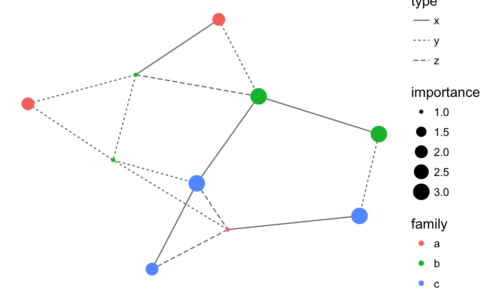

ggplot2 now has an official extension mechanism. This means that others can now easily create their own stats, geoms and positions, and provide them in other packages. This should allow the ggplot2 community to flourish, even as less development work happens in ggplot2 itself. This page showcases these extensions.
ggiraph
Make ggplot interactive
ggstance
Horizontal versions of ggplot2 geoms
ggalt
Extra coordinate systems, geoms & stats
ggforce
Accelarating ggplot2
ggrepel
Repel overlapping text labels
ggraph
Plot graph-like data structures
ggpmisc
Miscellaneous extensions to ggplot2
geomnet
Network visualizations in ggplot2
ggExtra
Marginal density plots or histograms
gganimate
Create easy animations with ggplot2
plotROC
Interactive ROC plots
ggthemes
ggplot themes and scales
ggspectra
Extensions for radiation spectra
ggnetwork
Geoms to plot networks with ggplot2
ggplot2 extensions: ggnetwork
ggnetwork
https://github.com/briatte/ggnetwork
The ggnetwork package provides a way to build network plots with ggplot2.
# Example from https://briatte.github.io/ggnetwork/
library(ggplot2)
library(ggnetwork)
# Let’s define a small random graph to illustrate each component of ggnetwork:
library(network)
library(sna)
n = network(rgraph(10, tprob = 0.2), directed = FALSE)
# Let’s now add categorical and continuous attributes for both edges and vertices
n %v% "family" = sample(letters[1:3], 10, replace = TRUE)
n %v% "importance" = sample(1:3, 10, replace = TRUE)
# We now add a categorical edge attribute called "type",
# which is set to either "x", "y" or "z", and a continuous vertex
# attribute called "day", which is set to either 1, 2 or 3.
e = network.edgecount(n)
set.edge.attribute(n, "type", sample(letters[24:26], e, replace = TRUE))
set.edge.attribute(n, "day", sample(1:3, e, replace = TRUE))
# Let’s now draw the network edges using geom_edges
# theme_blank
ggplot(data = ggnetwork(n), aes(x = x, y = y, xend = xend, yend = yend)) +
geom_edges(aes(linetype = type), color = "grey50") +
theme_blank()
# Let’s now draw the nodes using geom_nodes
ggplot(data = ggnetwork(n), aes(x = x, y = y, xend = xend, yend = yend)) +
geom_edges(aes(linetype = type), color = "grey50") +
geom_nodes(aes(color = family, size = importance)) +
theme_blank()
# Let’s now add node labels.
ggplot(data = ggnetwork(n), aes(x = x, y = y, xend = xend, yend = yend)) +
geom_edges(color = "black") +
geom_nodes(color = "black", size = 8) +
geom_nodetext(aes(color = family, label = LETTERS[ vertex.names ]), fontface = "bold") +
theme_blank()